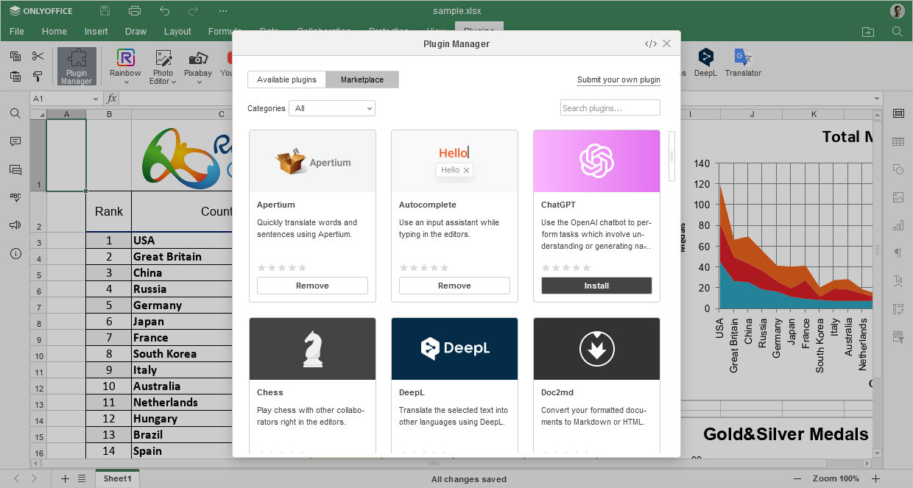
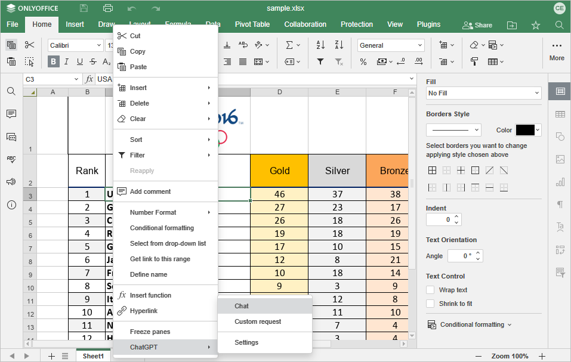

ChatGPT
ChatGPT dodatak vam omogućava da koristite OpenAI chatbot za obavljanje zadataka koji podrazumevaju razumevanje ili generisanje prirodnog jezika ili koda.
Počevši od ONLYOFFICE Docs 8.2 verzije, nijedan dodatak ne dolazi podrazumevano uz editore. Dodaci se instaliraju putem Plugin Manager-a.
Instalacija
Da biste instalirali ChatGPT dodatak,
- Idite na karticu Plugins.
- Otvorite Plugin Manager.
-
Pronađite ChatGPT na marketplace-u i kliknite dugme Install ispod.

- Kliknite desnim tasterom miša bilo gde u dokumentu i pronađite ChatGPT u kontekstnom meniju.
-
Kliknite Settings da biste nastavili sa konfiguracijom dodatka.

Konfiguracija
- Kreirajte svoj API ključ na stranici OpenAI API key.
- Kopirajte generisani API ključ u odgovarajuće polje u prozoru Settings.

Kako koristiti
ONLYOFFICE ne preuzima odgovornost za bilo koje ChatGPT odgovore koji mogu sadržati greške ili propuste, kao ni za bilo kakav uvredljiv ili neprikladan sadržaj. Informacije sadržane u odgovorima dodatka generiše ChatGPT i pružaju se po principu „kakve jesu“, bez dodatnog filtriranja od strane ONLYOFFICE-a.
Nakon instalacije, ChatGPT će biti dodat u kontekstni meni, a svim ChatGPT funkcijama pristupa se desnim klikom miša. Izaberite deo teksta ili reč da biste otvorili kontekstni meni i izabrali jednu od ChatGPT funkcija: Text Analysis, Word Analysis, Translation, Image Generation, Thesaurus, Chat i Custom Request.
Chat
Integracija ChatGPT-a u kontekstni meni omogućava vam da pokrenete Chat sa bilo kog mesta u dokumentu. Koristite chatbot za interakciju i vođenje razgovora, postavljanje pitanja i dobijanje odgovora na vaše zahteve.
Idite na opciju Chat iz ChatGPT kontekstnog menija i započnite razgovor u polju za unos teksta na dnu ChatGPT prozora.

Custom Request
Funkcija Custom Request vam omogućava da tokenizujete prirodni jezik ili kod. Alat pretvara ulazni tekst u listu tokena, obrađuje zahtev, pretvara generisane tokene nazad u tekst i vraća rezultat u dokument.
- Da biste poslali prilagođeni zahtev, idite u ChatGPT kontekstni meni i kliknite Custom request.
-
U tekstualno polje Open AI unesite tekst koji želite da tokenizujete. Alat prikazuje ukupan broj tokena u tekstu.

-
Kliknite Show advanced settings da biste konfigurisali podešavanja zahteva:

- Model – model koji će generisati rezultat. Neki modeli su pogodniji za zadatke prirodnog jezika, dok su drugi specijalizovani za kod. Za više informacija o ovim modelima, pogledajte zvaničnu ChatGPT veb stranicu.
- Maximum length – maksimalan broj tokena koji će biti generisan u rezultatu.
- Temperature – ovaj parametar kontroliše nasumičnost, npr. smanjenje vrednosti rezultira manje nasumičnim odgovorima. Kako se temperatura približava nuli, izlaz postaje deterministički i ponavljajući.
- Top P – alternativa uzorkovanju pomoću temperature, poznata kao nucleus sampling, gde model razmatra rezultate tokena sa top_p verovatnoćom.
- Stop sequences – do četiri sekvence na kojima će API zaustaviti dalje generisanje tokena. Vraćeni tekst neće sadržati stop sekvencu.
- Kliknite dugme Submit da biste obradili tekst ili kliknite dugme Clear da biste obrisali zahtev i uneli novi.